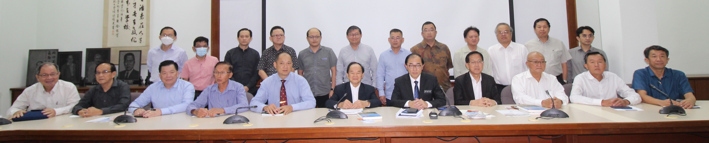

副教长马汉顺莅访交流简报
与会者合影。前排左起：萧汉昌、杨才国、杨安山、李添霖、庄俊隆、陈大锦、马汉顺、陈友信、杨应俊、卢成良、吴小铭；后排左起：陈正锦、罗志昌、张翔坚、李兆祥、锺镇鸿、何广福、徐来兴、潘光耀、陈贵源、郑东旺、彭忠良、梁胜义。2022年6月14日，董总领导层热烈欢迎教育部副部长拿督马汉顺莅访。这是马副部长上任以来首度亲临董总。在交流会之前，董总领导们陪同马副部长参观了董总行政部。
董总主席陈大锦在交流会上致词时表示，过去两年，我国除了面对疫情肆虐之外，政局也相当动荡，特别是马来极右保守势力从中搅局，使我国的华文教育备受挑战，许多华教课题亦充满变数，所幸在马副部长的鼎力协助下，积极回应董总所提出的疑问和与要求，一些华教课题才得以缓解和解决。其中包括了2021年全国华文独中继续获得1,500万令吉的特别拨款，希望这项拨款能得以延续。
陈大锦指出，有关华淡小国语课爪夷文课题，教育部应沿用2015年的方式，以多元的视角，在小学马来文课本介绍各族文字书法艺术，让学生了解和学习各族群的文化特色，以符合和展现我国多元族群、语文、文化和宗教的实际情况。
他说，教育部也必须重视全国华小师资短缺、国中华文科教师不足，以及国民型中学华裔师资比例下降的问题，这乃是全国性课题，是这些学校所面对的困境。教育部应研究和探讨新的师范课程规划，结合一些冷门科目作为双主修的师范模式，并定期召开包含各方的师资圆桌会议，以制定短期、中期和长期的解决方案。
他强调，董总依旧秉持“超越政党，不超越政治”的原则，团结一切可以团结的力量，以维护和发展华文教育。我们始终实事求是，从不偏袒任何朝野政党，任何协助华教和母语教育的政党，我们都会肯定其努力，同时予以监督和建言。
马汉顺表示，上任接近3年期间已多次与董总、教总、华理会，以及其他关心各源流教育的团体见面和交流。他也透露，今日很荣幸可以参观董总行政部，特别是课程局和考试局，这都不是一朝一夕的成果，在这几十年来，这方面工作做得非常好，他代表教育部恭贺大家。
他说，特别感谢现任董总领导层，总是以开明和就事论事的态度看待和处理事情，因此彼此总能开诚布公地商讨华教所面对的各类问题。在交流会上，马副部长针对当前数项华教课题，向董总领导层作出了详细的汇报。
其他出席者还包括董总署理主席陈友信、副主席杨应俊、李添霖、卢成良、吴小铭、秘书长庄俊隆、副秘书长杨才国、财政杨安山、中央委员萧汉昌、黄再兴、潘光耀、罗志昌、陈贵源、李兆祥、郑东旺、陈云枫、徐来兴、吴思亿、何广福，执行长梁胜义、两位副执行长锺伟前、曾庆方等；各属会代表包括柔佛董联会副主席锺镇鸿、森美兰董联会署理主席萧福才、执行长梁丹亮、雪隆董联会主席蔡庆文、副主席陈正锦、代表彭忠良、彭亨董联会秘书长张翔坚等。